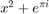
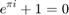

Contents
%x=[0.3750,0.1751,202]; function [out] = HATrun(x)
parameters (years)
%humans H=300; muH=1/59; %4.66e-5; %human death rate betaH=x(1); %0.1751; %transmission prob from tsetse > human tauH=365/12; %human incubation period gammaH1=365/526; %stage 1 infectious period gammaH2=365/252; %stage 2 infectious period %tsetse V=5000; eta=365/20; %pupae
Not enough input arguments. Error in HATrun (line 7) betaH=x(1); %0.1751; %transmission prob from tsetse > human
 stage duration
BV=365*0.05; %tsetse birth rate muV0=365*0.030; %tsetse death rate no comp muV1=0.0002; %tsetse death comp param sigmaV=365; %susceptibility period aH=365/3; %human bite rate

% % % % % PREFORMATTED % % % % % TEXT
betaVH=x(2); %0.3750; %proportion of tsetse bites on humans tauV=365/25; %incubation period in tsetse betaV=0.2; %treatment P1=0; %prob of a stage I individual getting a CATT test P1PD=0.87; %sensitivity of test for stage I P1TP=1; %prob of treatment after testing +ve for stage I P2=1; %prob of stage II individual getting a CATT test P2PD=0.87; %sensitivity of test for stage II P2TP=1; %prob of treatment after testing +ve for stage II eps1=0.94; %efficiency of stage I treatment eps2=0.965; %efficiency of stage II treatment (nifurtimox-eflornithine) zeta1=1; %treatment seeking rate for stage II patients zeta2=1/x(3); %treatment seeking rate for stage II patients p2=0.007; %probability of death due to stage 2 treatment failure deltaH=365/50; %immune period in humans after treatment
initial conditions
%humans h_0=[H,0,0,0,0]; %[suscep,exposed,s1,s2,recovered] %tsetse v_0=[BV*V/eta,0.99*V, 0, 0.01*V,0]; %pupae,suscep,exposed,infected,recovered] X_0=horzcat(h_0,v_0);
ode45
[t,X]=ode23s(@HAT,[0:1000],X_0,[],deltaH,aH,betaVH,betaH,muH,tauH,gammaH1,eps1,eps2,zeta1,zeta2,...
gammaH2,p2,BV,eta,sigmaV,tauV,muV0,muV1,P1,P1PD,P1TP,P2,P2PD,P2TP,betaV);
equilibrium prevalences (2002)
S1(1)=(X(end,3))/sum(X(end,1:5)); %2002 s1 S2(1)=(X(end,4))/sum(X(end,1:5)); %2002 s2 V(1)=(X(end,9))/sum(X(end,6:10)); %2002 Vi X01=X(end,:); %new intiials cov=0.66203*0.87; %coverage=attendance*sensitivity X01(5)=X01(5)+cov*(X01(3)+X01(4)); %new recovered after active surveillance X01(3)=(1-cov)*X01(3); %new s1 are those who weren't covered in surveillance X01(4)=(1-cov)*X01(4); %new s2 tspan1=linspace(0,2,3); % 2002-2004 [t1,X1]=ode23s(@HAT,tspan1,X01,[],deltaH,aH,betaVH,betaH,muH,tauH,gammaH1,eps1,eps2,zeta1,zeta2,... gammaH2,p2,BV,eta,sigmaV,tauV,muV0,muV1,P1,P1PD,P1TP,P2,P2PD,P2TP,betaV);
end of 2003, beg. 2004
S1(2)=(X1(end,3))/sum(X1(end,1:5)); %2004 s1 S2(2)=(X1(end,4))/sum(X1(end,1:5)); %2004 s2 V(2)=(X1(end,9))/sum(X1(end,6:10)); %2004 Vi %2004-2006 X02=X1(end,:); %new intiials cov=0.82607*0.87; %coverage=attendance*sensitivity X02(5)=X02(5)+cov*(X02(3)+X02(4)); %new recovered after active surveillance X02(3)=(1-cov)*X02(3); %new s1 are those who weren't covered in surveillance X02(4)=(1-cov)*X02(4); %new s2 tspan2=linspace(0,2,3); % 2004-2006 [t2,X2]=ode23s(@HAT,tspan2,X02,[],deltaH,aH,betaVH,betaH,muH,tauH,gammaH1,eps1,eps2,zeta1,zeta2,... gammaH2,p2,BV,eta,sigmaV,tauV,muV0,muV1,P1,P1PD,P1TP,P2,P2PD,P2TP,betaV);
end of 2005, beg. 2006
S1(3)=(X2(end,3))/sum(X2(end,1:5)); %2006 s1 S2(3)=(X2(end,4))/sum(X2(end,1:5)); %2006 s2 V(3)=(X2(end,9))/sum(X2(end,6:10)); %2006 Vi %2006-2012 X03=X2(end,:); %new intiials cov=0.57183*0.87; %coverage=attendance*sensitivity X03(5)=X03(5)+cov*(X03(3)+X03(4)); %new recovered after active surveillance X03(3)=(1-cov)*X03(3); %new s1 are those who weren't covered in surveillance X03(4)=(1-cov)*X03(4); %new s2 tspan3=linspace(0,6,7); % 2006-2012 [t3,X3]=ode23s(@HAT,tspan3,X03,[],deltaH,aH,betaVH,betaH,muH,tauH,gammaH1,eps1,eps2,zeta1,zeta2,... gammaH2,p2,BV,eta,sigmaV,tauV,muV0,muV1,P1,P1PD,P1TP,P2,P2PD,P2TP,betaV);
end of 2011; beg. 2012
S1(4)=(X3(end,3))/sum(X3(end,1:5)); %2012 s1 S2(4)=(X3(end,4))/sum(X3(end,1:5)); %2012 s2 V(4)=(X3(end,9))/sum(X3(end,6:10)); %2012 Vi %X04=X3(end,:); %cov=0.803716*0.87; %coverage=attendance*sensitivity %X04(5)=X04(5)+cov*(X04(3)+X03(4)); %new recovered after active surveillance %X04(3)=(1-cov)*X04(3); %new s1 are those who weren't covered in surveillance %X04(4)=(1-cov)*X04(4); %new s2 %tspan4=linspace(0,1,2); %run from end of 2011 to end of 2012 %[t4,X4]=ode23s(@HAT,tspan4,X04,[],deltaH,aH,betaVH,betaH,muH,tauH,gammaH1,eps1,eps2,zeta1,zeta2,... % gammaH2,p2,BV,eta,sigmaV,tauV,muV0,muV1,P1,P1PD,P1TP,P2,P2PD,P2TP,betaV);
2013
%S1(5)=(X4(end,3))/sum(X4(end,1:5)); %2013 %S2(5)=(X4(end,4))/sum(X4(end,1:5)); %2013 %V(5)=(X4(end,9))/sum(X4(end,6:10)); %2013 Vi S1=S1'; S2=S2'; V=V'; out{1}=horzcat(S1,S2,V); out{2}=X3(end,:);